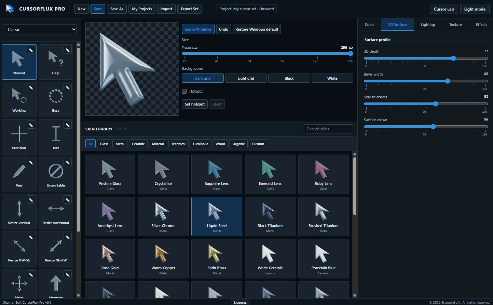
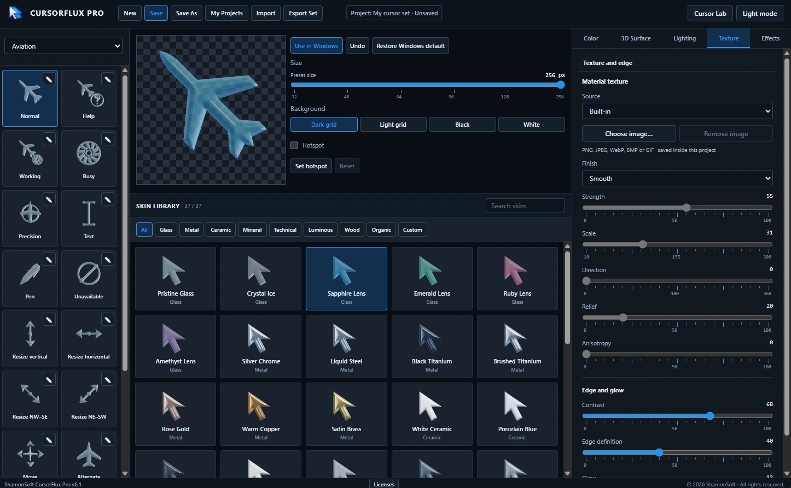
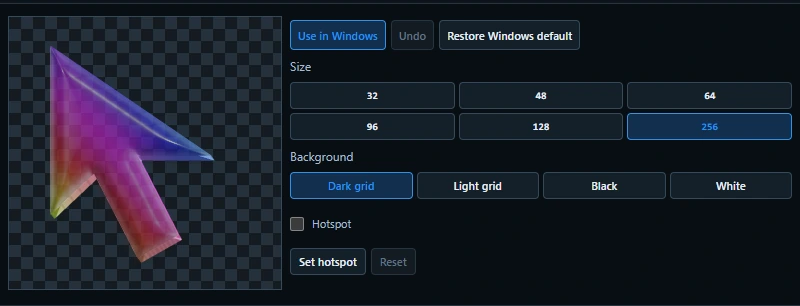
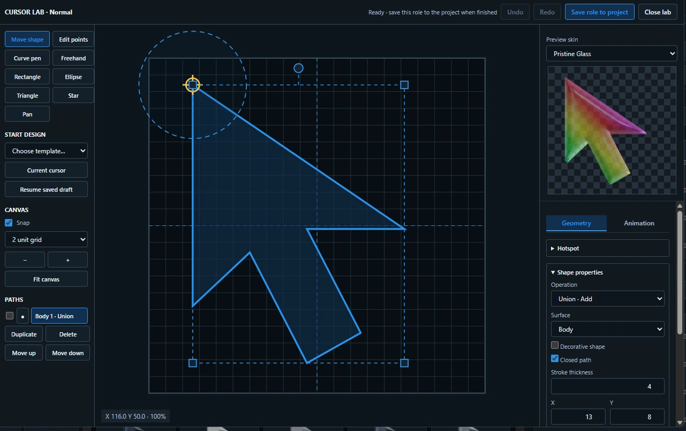
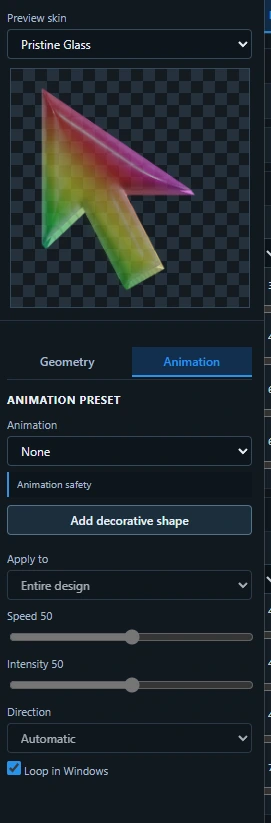

Design a Windows cursor set of your own.
Start with a coordinated set or draw a cursor from scratch. Change the shape, color and animation of each pointer, from the everyday arrow to the busy and resize cursors.
Preview the whole set before you apply it to Windows. You can restore your previous cursors or switch back to the Windows defaults.

Find a look for all 17 cursor roles.
Creative Studio has 12 ready-made looks. Try variations, keep the colors or materials you like, and mix cursors from different sets.

Work on the details you can see.
Change the finish, depth, lighting or transparency. Add animated color, a trail or a click effect and preview it before you settle on a look.

Check the cursor at the size you use.
Compare two looks side by side at different sizes and on light, dark or busy backgrounds. Set the hotspot so clicks land where the cursor points.


Draw or import a shape in Cursor Lab.
Draw freehand, edit curves and points, or turn a transparent PNG into an editable outline. Add an animation and save the cursor back into your set.
See CursorFlux Pro in action.
Watch a guided tour of cursor creation, skins, effects, animation, live preview and Windows cursor-set export.
Watch on YouTube